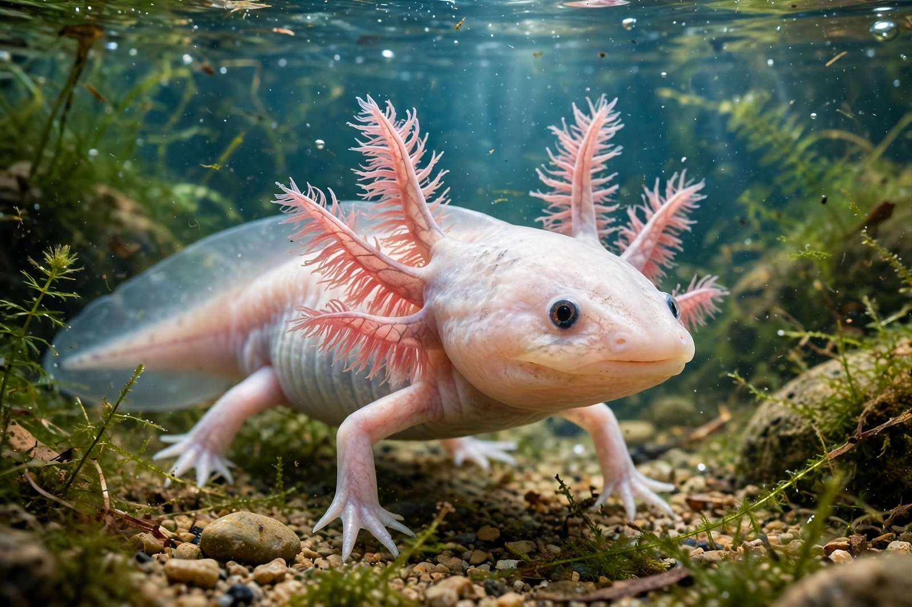

| Paedomorphism | |
|---|---|
 | |
| Field | Evolutionary developmental biology |
| Mechanisms | Neoteny, progenesis, postdisplacement |
| Classic example | Axolotl |
| Opposite | Peramorphosis |
Paedomorphism (also spelled pedomorphism) is the retention by adults of traits previously seen only in the young of their ancestors. It is an important mechanism of evolutionary change studied in evolutionary developmental biology (evo-devo), arising when the timing or rate of somatic development shifts relative to sexual maturation — a phenomenon called heterochrony.
Walter Garstang and later Stephen Jay Gould, in his 1977 book Ontogeny and Phylogeny, distinguished the main routes to paedomorphosis:
The axolotl (Ambystoma mexicanum) of Lake Xochimilco is the textbook case: it retains larval external gills and an aquatic lifestyle yet breeds successfully, a condition called obligate neoteny linked to thyroid hormone signalling. Many other salamanders, including the mudpuppy and the olm, are paedomorphic. Paedomorphosis has also been proposed for the origin of chordates (Garstang's hypothesis, from a tadpole-like larva), for insects (from juvenile millipede-like ancestors), and controversially for human evolution — the "neoteny" of human facial proportions, prolonged childhood and lifelong learning emphasised by Konrad Lorenz and Gould.
Paedomorphic traits are conspicuous in domesticated animals: dogs retain floppy ears, shorter muzzles and juvenile playfulness into adulthood, part of the suite of traits produced as a by-product of selection for tameness in experiments such as Belyaev's farm-fox study.